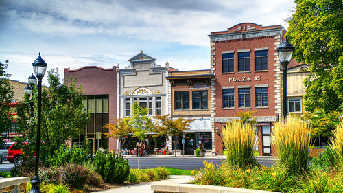

Logan, Utah is a scenic college town located in Cache Valley and home to Utah State University. It is known for its mountain views, outdoor recreation, and small-town atmosphere.

Learn more about Utah State University by visiting USU’s official website.
© 2026 Exploring Logan, Utah
Email Us